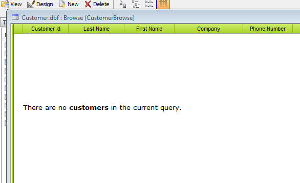
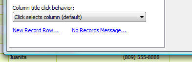
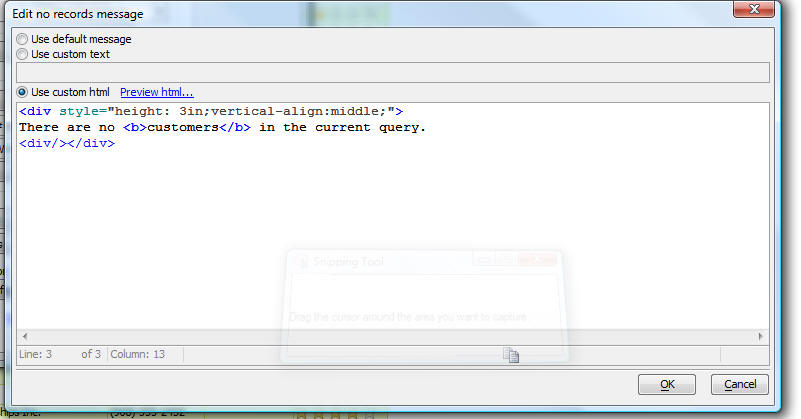

Browse - No Records in Query Message
If you have a Browse layout open and you execute some Xbasic that sets the Browse filter to a query that does not find any matching records, then if the Browse allows data entry, focus will move to the new record row. However, if the Browse does not allow data entry, the Browse did not have any facility for presenting a message to the user. Now, the Browse has a new property that allows you to set the 'No records in query' message. The message can either be plain text, or html.In this example the CustomerBrowse in AlphaSports was configured to prevent data entry. Then from the Interactive window, this command was executed so that there were no records in the query:
CustomerBrowse.queryRun(".f.")
The browse now displays an HTML message.

To set the No Records in Query message, go to Browse Properties. Then go to the Browse tab and click the No Records Message... hyperlink.

The following dialog will open:
